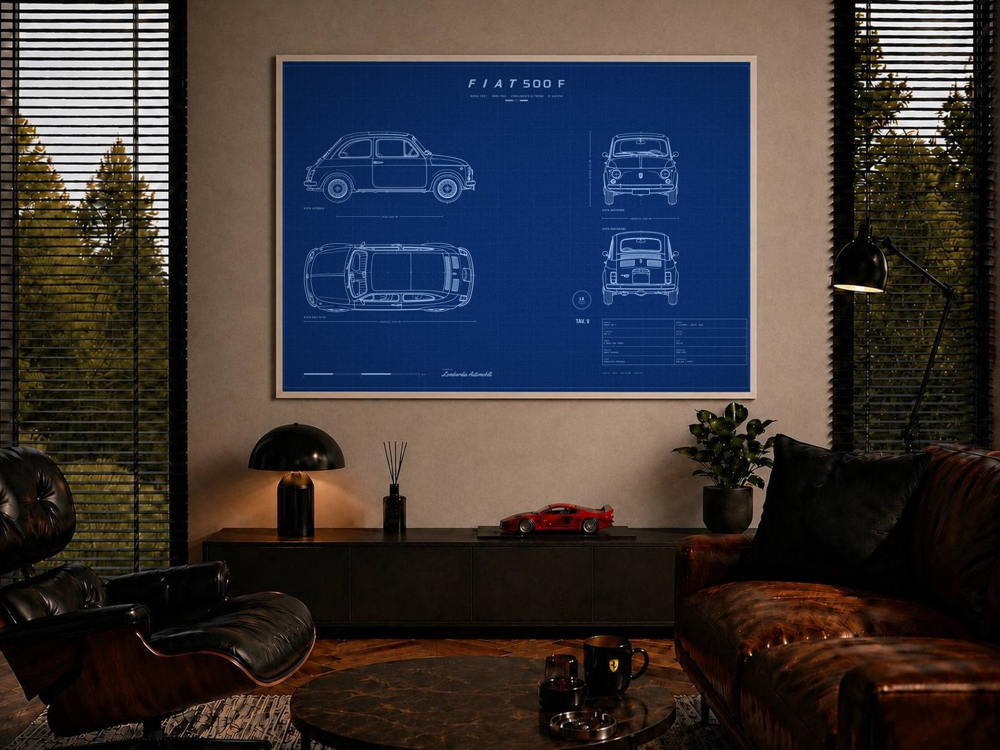
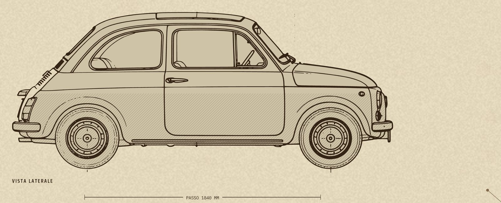
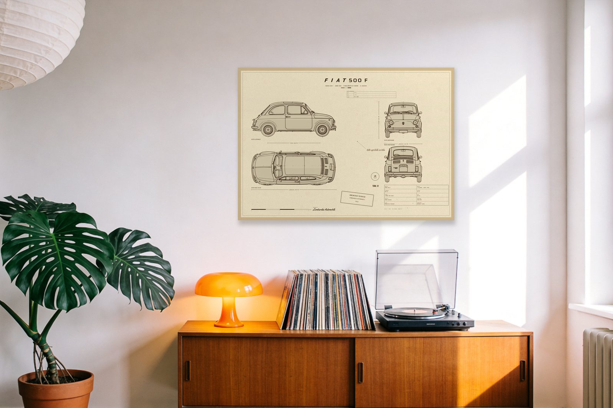
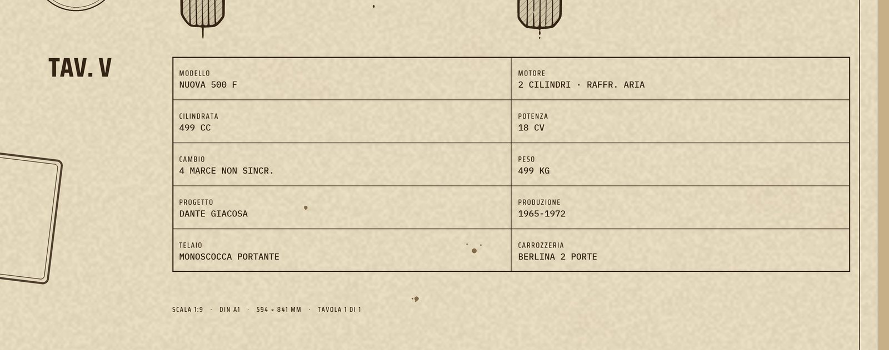
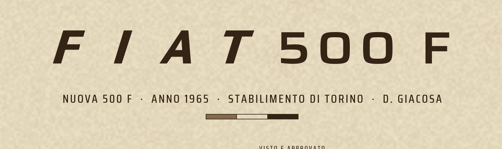

Fiat 500 F
Not selected
{kind=link}

{kind=link}

{kind=link}

{kind=link}

{kind=link}

{kind=link}
{kind=link}
The sheet at full print dimensions, 9933 × 7016 — A1 at 300 dpi, 6.7 MB. Byte for byte the file that goes to the printer; nothing here is re-encoded or resized.
Direct link, for the Prodigi order that order.mjs places: /print/Fiat-500-F-A1-print.jpg
Fiat 500 F Technical Engineering Poster
Two cylinders, 499 cc and 2.97 metres. Dante Giacosa's answer to putting Italy on wheels.
This is an A1 engineering sheet of the Fiat 500 F, drawn in the language of factory documentation: four orthographic views, side, front, rear and plan, set on a drafting grid, with the overall dimensions called out as real dimension lines and a title block carrying the mechanical specification.
The Archivio Technico series
This sheet is TAV. V in an ongoing archive of technical drawings, each built to the same grid, the same title-block system and the same standard of sourcing.
Condition
New. Printed on Enhanced Matte Art Paper, 200 gsm, archival pigment inks, unframed.
Dimensions
- 594 x 841 mm (A1)
- Landscape orientation
- Drawn to 1:10, with a graphic scale bar on the sheet
- Unframed, unmounted
Perfect for
- Fiat 500 owners and club members
- Collectors of Italian design and industrial history
- Kitchen, cafe and apartment interiors
- Collectors of factory technical documentation
- Anyone with an affection for Italy
Technical specification
- Modello: NUOVA 500 F
- Motore: 2 CILINDRI · RAFFR. ARIA
- Cilindrata: 499 CC
- Potenza: 18 CV
- Cambio: 4 MARCE NON SINCR.
- Peso: 499 KG
- Progetto: DANTE GIACOSA
- Produzione: 1965-1972
- Telaio: MONOSCOCCA PORTANTE
- Carrozzeria: BERLINA 2 PORTE
- Lunghezza: 2970 mm
- Larghezza: 1320 mm
- Altezza: 1325 mm
- Passo: 1840 mm
Shipped with care using rigid packaging.
| Era | 1900-2000 |
|---|---|
| Manufacturer/Brand | Other -> Fiat |
| Poster title | 500 F |
| Estimated period | 1960s |
| Condition | A (excellent - mint condition) |
| Number of objects | 1 |
| Height | 594 |
| Width | 841 |
| Unit | mm |
| Autographed by a famous person | No |
| Designer/Artist | Other -> Lombardia Automobili |
| Subject | Transport, Graphic design, Illustrated, Vintage, Applied art, Technology, Other |
| Subject keywords (Other) | automobili, blueprint, technical drawing, engineering drawing, A1 poster, fiat, 500, cinquecento, nuova 500, city car, dante giacosa |
| Country of origin | Italy |
| Specific region of origin | Turin |
| Your reference label | blue + fiat500 |
- Description: paste the DESCRIPTION block above VERBATIM, markdown markers stripped. Add nothing - no SHIPPING section, no upper-cased heads (founder, 2026-09-01).
- Images: 6, in order - **(04) noir room as the COVER**, (01) hero, (06) car profile close-up, (02) the room, (03) specs close-up, (05) logo close-up. Founder's order, 2026-09-01.
- Estimated value: EUR 200 (expert-only, buyers never see it)
- Set a reserve price: OFF
- Offer buy now: OFF
- Shipping preset: `global`
- Update preset if changes are made: ON (editing any rate here rewrites the preset for every future lot)
- Package size: Medium (an A1 tube is ~65 x 10 x 10 cm, ~0.4 kg; Small maxes at 38x26x3 cm and fails on both length and depth. Founder, 2026-09-01.)
- Pickup only: OFF
- Offer free shipping: OFF
- Offer free pickup: OFF
- Offer combined shipping: ON
- Shipping rates: EUR 25 to every listed country, EUR 30 rest of world
- Finish at **Save as draft**. Submit is the founder's, per lot.